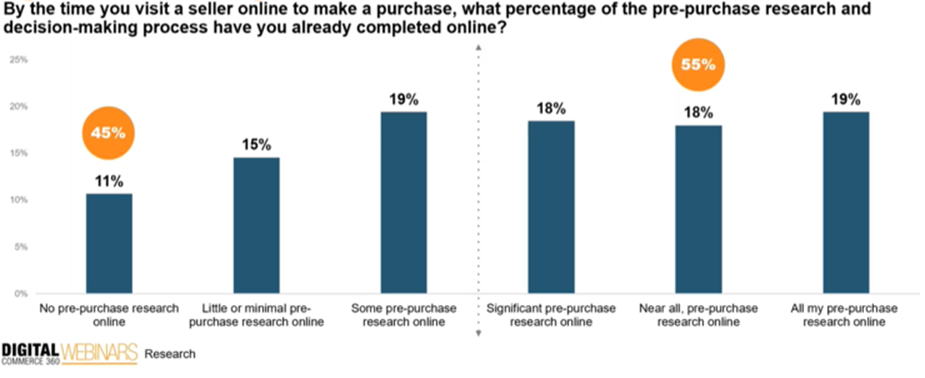
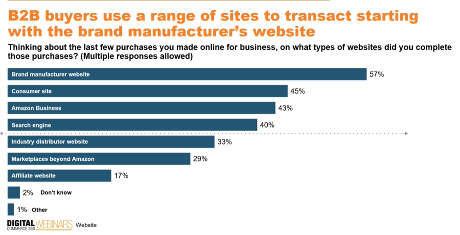
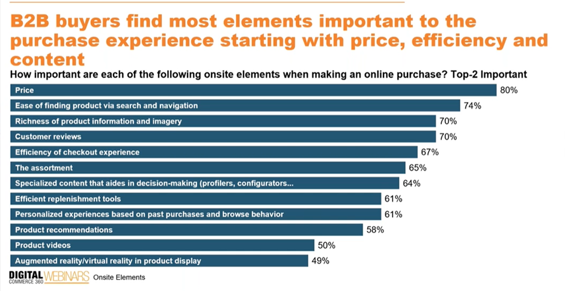

How is Gen AI shaping up the dynamics of B2B Digital Commerce?
In the rapidly evolving landscape of digital commerce, it’s imperative to observe the changing dynamics between B2B buyers and B2B sellers and, more importantly, the changes that B2B buyers have undergone in their purchasing behaviors. In order to empower sellers to meet demand and rising customer expectations, it’s crucial to understand the nuances around which purchasing features B2B buyers find most important, which sites they prefer to purchase from, and which technology they invest most in. This data point significantly helps B2B sellers to outline the strategy on how Gen AI and analytics can be leveraged to bring hyper-personalized customer engagement on the buying journey.

As per one of the research projects, the majority of B2B buyers come prepared with 55% having done at least significant pre-purchase research by the time they visit a seller. This means that B2B buyers spend a lot of time doing the pre-purchase market research looking at the key elements that are important to the purchasing experience like pricing, product they’re looking for & feature functionality in their purchasing process. AI helps sellers find out what attributes & behaviour (tied to the analytics) that buyers are looking for. With young generation coming in as digital B2B buyers, they want the seller side to make their job quicker, easier and more efficient.
One of the other points to note about their purchasing behaviours is that these buying managers or purchasing teams visit umpteen e-commerce sites before making any purchasing decisions. AI plays a vital role here in finding ways for buyers to come to your site.

B2B buyers believe that brand manufacturers have the best information on their products and that going direct to these sites to buy B2B products is preferred, followed by consumer sites and Amazon Business. They prefer to buy B2B products directly from the brand that manufactures them vs. the distributor that sells them. They also prefer marketplaces that sell products from multiple sellers, as they get the greatest information to compare various brands in a much more convenient format. As per the research, 1 in 4 transactions emanates from Amazon business. That’s because Amazon business lists like Amazon itself. So, the personalization features, the user experiences, and the pricing models that people want are something Amazon sets up for their buyers. It’s worth noting that only one-third of total B2B transactions come directly from the distribution site. Hence the key takeaway here is to see how AI will help the selling side get in touch with the buyer side, looking at the myriads of ways these buyers come to your site. AI, by using their buying personas in analytics, can help selling team identify which channel can push their products out much faster than ever before.
Coming to the elements B2B buyers take into account the most in their purchase experience, pricing, efficiency, and content topped the list.

The point that bothers B2B buyers is to ensure they’re buying the right products and do not want to get into the hassle of returns, improving efficiency. That’s where providing accurate product information that is targeted to their buyers plays an instrumental role while creating product descriptions and other related content. Here Gen AI can help write appealing and captivating content in terms of product image, title, and description that engages the buyers and encourages them to complete the purchasing process. On the pricing element, Gen AI can improve tactical pricing for B2B buyer personas.
They’re also looking for websites where they get a better and more personalized user experience. To summarize a B2B user’s experience today: content, trust, and brand awareness are a few of the aspects they have on top of their minds today that sellers should ensure their businesses maintain.
Personalization: Personalization helps buyers look for the products they want, but sellers can be a little wary of offering hyper-personalization, as they present only that information that they’ve watched before, leaving out a whole bunch of their catalog that they might be interested in and they’ve never seen because they never clicked on it. It’s a whiplash effect in shopping behaviour where they can no longer find precisely what they’re looking for because there is an overload of similar products. Not just personalization, but it’s mandatory to also have recommendations that might be complementary or second- or third-tier products that customers are looking for.
B2B is highly segmented. Gen AI shouldn’t just display results based on their past and present purchasing behaviors but should consider the larger context in terms of what industrial classification or what trade they are into and what job or project they are working for.
Content Creation: Gen AI can transform mundane product data into compelling product titles, attributes, and descriptions. Research says ~80% of the content is created that’s on par with what humans could write, and 10% is better, while 10% of it is worse. It’s fictionalized content—something the model creation companies are improving on to ensure that it’s not injected into the systems.
Pricing: Tactical pricing with these new tools is tied to the persona component. Gen AI enables businesses to adjust prices in real-time based on market conditions, customer behaviour, and competitor actions. AI algorithms analyze a multitude of factors, including supply and demand, inventory levels, competitor pricing, and customer purchasing patterns, to optimize pricing continuously.
Gen AI also analyzes which pricing element impacts the buyers by comparing the total price of the order with the product price—total order costs have other shipping and fulfillment costs that AI can analyze and marry that with customer intelligence, customer attributes, product attributes, and feature extractions. Based on all these elements, Gen AI helps understand the interrelationships on what is impacting that price sensitivity and propensity.
There are many more areas where Gen AI can be handy for B2B sellers, as shown in the above research graph, which I will cover in my next article. To conclude, AI helps sellers to understand what the buyer wants and make them for a quick and easy, convenient experience.
While a lot can be done depending on where their pain points are, we need to take a step back and ensure that everything that we’re doing is driving towards a general strategy. We should always go back and review what we’re trying to accomplish to the overall goals and objectives and KPIs of an organization to ensure that what we are doing will be driving value for the organization and not just because it’s an amazing new and trendy technology.
Thanks for reading . Please feel free to share your comments and feedback.